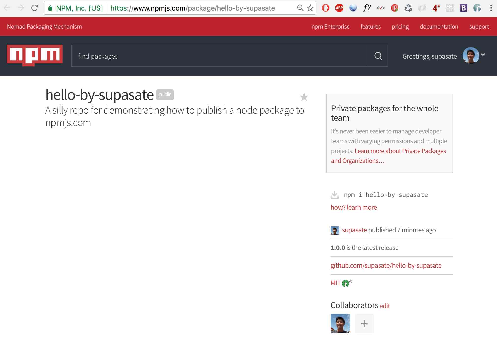
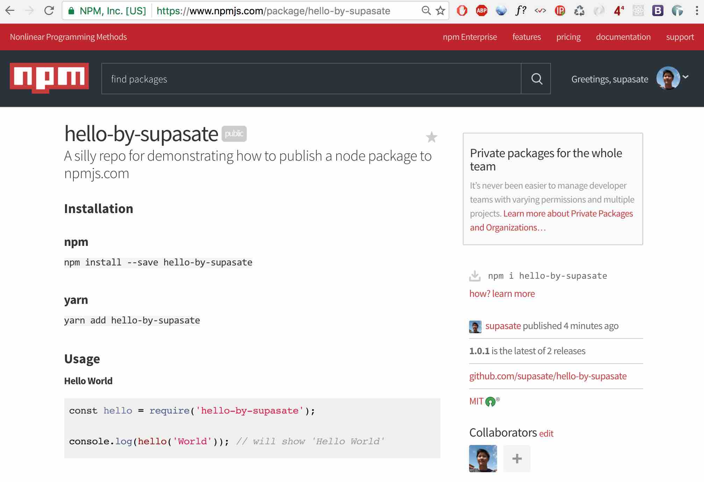

สร้าง npm package ขึ้น npmjs.com
Posted October 26, 2016 by Supasate Choochaisriเชื่อว่าทุกคนที่ใช้ Node.js ต้องมีการติดตั้ง node package ผ่านคำสั่ง npm install กันเป็นประจำอยู่แล้วใช่มั้ยครับ (หรือไม่ก็ใช้ yarn กันแทนแล้ว) ในบทความนี้เราจะเปลี่ยนจากบทบาทผู้บริโภค package มาเป็นผู้ผลิต package กันบ้างครับ โดยจะพูดถึงวิธีการนำ npm package ของตัวเองขึ้นไปยัง npmjs.com เพื่อให้คนอื่นเรียกใช้ package ของเราได้ ซึ่งวิธีการนั้นง่ายกว่าที่หลายคนคิดกันมากๆ ลองมาทำกันดูนะครับ
ขั้นที่ 0 เตรียม package
สมมติว่าผมมี package ชื่อ hello-by-supasate ที่อยากจะ publish ขึ้น npmjs.com โครงสร้าง folder ผมหน้าตาแบบนี้
hello-by-supasate
|-- src
| |-- hello.js
|-- test
| |-- hello.spec.js
|-- .gitignore
|-- package.json
|-- README.md
(ดูได้ที่ github repository)
ไฟล์ที่จำเป็นที่สุดคือไฟล์ package.json ลองดูภาพรวมของไฟล์กันก่อนครับ
{
"name": "hello-by-supasate", // ชื่อ package
"version": "1.0.0", // เลขเวอร์ชัน
"description": "A silly repo for demonstrating how to publish a node package to npmjs.com", // คำอธิบาย package จะไปแสดงไว้ใต้ชื่อ package ในเว็บ npmjs.com
"main": "src/hello.js", // entry point (อ่านคำบรรยายด้านล่าง)
"scripts": { // npm script ต่างๆที่ใช้ระหว่างพัฒนา
"test": "mocha"
},
"repository": { // บอกว่า source code เราเก็บไว้ที่ไหนและประเภทอะไร
"type": "git",
"url": "git+https://github.com/supasate/hello-by-supasate.git"
},
"keywords": [ // keywords จะปรากฎในหน้า package ของเราบน npmjs.com
"npm",
"hello"
],
"author": "Supasate Choochaisri", // ชื่อผู้เขียนโปรแกรม
"license": "MIT", // รูปแบบสัญญาอนุญาตที่ให้นำไปใช้งานได้
"bugs": { // ช่องทางแจ้ง bug ของ package
"url": "https://github.com/supasate/hello-by-supasate/issues"
},
"homepage": "https://github.com/supasate/hello-by-supasate#readme", // หน้าเว็บหลักของ package
"devDependencies": { // depenendencies ที่ใช้ในระหว่างพัฒนา จะไม่ถูกติดตั้งไปกับคำสั่ง npm install
"chai": "^3.5.0",
"mocha": "^3.1.2"
}
}
ส่วนที่สำคัญคือ main หรือที่ผม comment ไว้ว่าเป็น entry point
ซึ่งหมายถึงว่าเวลาคนสั่ง require('hello-by-supasate') ในโค้ดของเค้าแล้ว ค่าที่ได้มาคือค่าของตัวแปร exports ของ module นั้นๆมาให้ผู้ใช้งาน ซึ่งก็คือ module.exports ในไฟล์ที่กำหนดไว้ใน main ของเรานั่นเอง
เช่น ในไฟล์ src/hello.js ของผมมีหน้าตาแบบนี้
module.exports = (name) => `Hello ${name}`
// ฟังก์ชันที่รับ argument ชื่อ name แล้ว return string คำว่า 'Hello' กับชื่อที่รับเข้ามาจากตัวแปร name
ดังนั้นเวลาคนอื่นเอาไปใช้ก็สามารถใช้งานได้โดยวิธีนี้
const hello = require('hello-by-supasate')
console.log(hello('World')) // แสดง 'Hello World'
หรือถ้าเป็น ES6 ก็เขียนแบบนี้ได้
import hello from 'hello-by-supasate'
console.log(hello('World')) // แสดง 'Hello World'
เมื่อ package เราพร้อมให้คนอื่นเรียกใช้แล้ว เราก็มาทำการ publish package ของเรากันเลยครับ
ขั้นที่ 1 สร้าง account
สร้าง account บนเว็บ npmjs.com โดย username ที่เลือกจะนำไปใช้กับ profile บน npmjs.com ของเรา (เช่น ของผมจะเป็น www.npmjs.com/~supasate)
หรือถ้าใครขี้เกียจสมัครผ่านเว็บก็สมัครผ่าน command line ได้เลย โดยใช้คำสั่ง npm adduser และระบุ username, password, email พอสร้างเสร็จด้วยวิธีนี้เสร็จแล้วจะ log in เข้าสู่ระบบให้อัตโนมัติให้เลยแสนสบาย
$ npm adduser
Username: <your_usrname>
Password: <your_password>
Email: (this IS public) <your_email>@<domain.com>
Logged in as <your_username> on https://registry.npmjs.org/.
(สังเกตบรรทัดสุดจะขึ้นว่า Logged in as ... แปลว่า log in สำเร็จเรียบร้อย)
ขั้นที่ 2 เข้าสู่ระบบ
สำหรับคนที่ไม่ได้สร้าง account ผ่าน command line หรือเคยมี account อยู่แล้ว สามารถเข้าสู่ระบบได้ด้วยคำสั่ง npm login
$ npm login
Username: <your_usrname>
Password: <your_password>
Email: (this IS public) <your_email>@<domain.com>
Logged in as <your_username> on https://registry.npmjs.org/.
ขั้นที่ 3 publish package
เมื่อพร้อมแล้วก็สั่งคำสั่ง npm publish
$ npm publish
+ hello-by-supasate@1.0.0
เท่านี้ package ของเราก็ขึ้นไปยัง npmjs.com ให้คนเรียกใช้แล้วดังรูป ง่ายดายมากๆครับ 
เราลองมาทดสอบใช้งาน package ของเราดูดีกว่า โดยการสร้าง folder เปล่าๆ แล้วติดตั้ง package ของเราดูกันครับ
$ mkdir test-my-package && cd test-my-package
$ npm install --save hello-by-supasate // หรือ yarn add hello-by-supasate
หลังจากติดตั้งเสร็จ สร้างไฟล์ index.js ดังนี้
const hello = require('hello-by-supasate')
console.log(hello('World'))
แล้วสั่ง run ด้วย node index.js จะได้ผลดังนี้
$ node index.js
Hello World
เป็นอันว่า package ของเราใช้งานได้เรียบร้อยครับ
ขั้นที่ 4 อัพเดท package
คราวนี้ถ้าเราต้องการแก้ไข package ของเราแล้วส่งอัพเดทขึ้นไปใหม่ทำยังไง
สมมติว่าเราทำการแก้ไข README เพื่อเพิ่มวิธีการใช้งาน package เราเข้าไปและ git commit เรียบร้อยแล้ว เราสามารถสั่ง npm version <update_type> เพื่อเพิ่มเลขเวอร์ชั่นของเราในไฟล์ package.json และ commit ให้โดยอัตโนมัติ
โดย <update_type> สามารถกำหนดเป็นเลขเวอร์ชั่นตามแบบ semver ได้ (คือ MAJOR.MINOR.PATCH เช่น 1.0.1) หรือถ้าใช้เป็นคำว่า major หรือ minor หรือ patch ก็จะเพิ่มเลขรุ่นตามที่ต้องการของ semver นั้นๆให้
เช่น ถ้าปัจจุบันเป็นเวอร์ชั่น version 1.0.1
- สั่ง
npm version patchจะกลายเป็น 1.0.2 - สั่ง
npm version minorจะกลายเป็น 1.1.0 - สั่ง
npm version majorจะกลายเป็น 2.0.0
พอเราเพิ่มเลขเวอร์ชันใน package.json ของเราเรียบร้อยแล้ว ให้สั่ง npm publish อีกครั้งเพื่ออัพเดท package ใหม่ของเราขึ้นไป
$ npm publish
+ hello-by-supasate@1.0.1
ลองกลับเข้าไปดูที่หน้าเว็บอีกครั้งก็จะพบว่า package ใหม่ของเราขึ้นไปแล้ว พร้อมกับแสดงข้อมูลจากไฟล์ README.md ที่ผมแก้ไขแสดงไว้ด้วย

ก็หวังว่าเพื่อนๆจะได้ลองนำ package ของตัวเองขึ้น npmjs.com เพื่อให้คนอื่นใช้งานหรือเพื่อให้ตัวเองใช้งาน package ของตัวเองในโปรเจคอื่นกันได้ง่ายขึ้นนะครับ